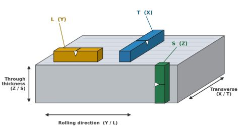
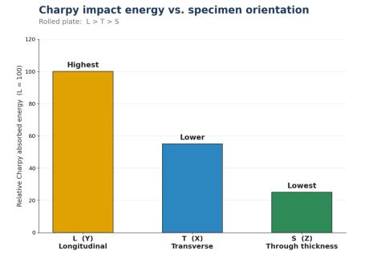

Charpy Impact Energy and Specimen Orientation in Rolled Plate
The same plate, from the same heat and tested at the same temperature, can give very different Charpy results. The difference comes from the direction in which the specimen is cut. Why this happens, and what to specify so that the test answers the right question.
Same plate, different results
A plate is tested three times, at the same temperature, with specimens from the same heat. One set passes comfortably, one is marginal and one fails. The material did not change; only the orientation of the specimen did.
Why orientation matters
Rolling does more than reduce the thickness. Non-metallic inclusions, mainly manganese sulphides, are elongated into thin stringers along the rolling direction and flattened into layers parallel to the plate surface, and banding of the microstructure can add to the effect. The plate becomes anisotropic: its toughness depends on how a crack meets these features.

| Orientation | Specimen axis | Crack path relative to the inclusions | Charpy energy |
|---|---|---|---|
| L, longitudinal | Parallel to the rolling direction | Cuts across the inclusions | Highest |
| T, transverse | Across the rolling direction | Runs along the inclusions | Lower |
| S, through thickness | Through the plate thickness | Runs between the inclusion layers | Lowest |
The order is always the same: L > T > S.

What this means in practice
- Transverse specimens are the conservative choice. Many codes and specifications require transverse specimens for plate for this reason. Always check the governing specification.
- State the orientation clearly on the purchase order and on the test request. A passing L result does not prove T compliance.
- Check the mill certificate reports the orientation actually tested, and ask if it does not.
- Through-thickness loading. Where a component is loaded through its thickness (T-joints, nozzle and attachment welds on thick plate), the S direction governs the risk of lamellar tearing. Through-thickness properties are normally specified by the reduction of area in a through-thickness tensile test (ASTM A770, EN 10164 Z-grades), not by Charpy.
- Cleaner steels (low sulphur, inclusion shape control) reduce the difference between directions, but they do not remove it.
The right test in the wrong direction gives the wrong answer.
References
- ASTM A770/A770M, Standard Specification for Through-Thickness Tension Testing of Steel Plates for Special Applications.
- EN 10164, Steel products with improved deformation properties perpendicular to the surface of the product.
This article is for general engineering guidance. Apply it with the current edition of the governing codes and specifications and the judgement of a qualified engineer.